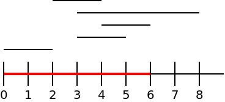

Para efeitos da nota atribuída à resolução de exercícios ao longo do semestre - Submeter até 23:59 de 24 de Abril
(o problema continuará depois disponível para submissão, mas sem contar para a nota)
[para perceber o contexto do problema deve ler o guião da aula #04]

Dado um conjunto de N segmentos de recta com coordenadas [Li, Ri] e um número M, a tua tarefa é descobrir qual a menor quantidade possível de segmentos que cobrem o segmento [0,M].
Na primeira linha do input vem um número M indicando o tamanho do segmento que queremos cobrir, tal como atrás explicado.
Na segunda linha vem um número N, indicando a quantidade de segmentos a considerar. Seguem-se N linhas, cada uma com 2 inteiros indicando os pontos iniciais e finais de cada um dos segmentos, ou seja, Li e Ri.
O output deve ser constituído por uma linha contendo um único número: a quantidade mínima de segmentos necessária para cobrir o segmento [0,M]. Para os casos de teste dados, é garantido que existe sempre maneira de cobrir o segmento [0,M].
São garantidos os seguintes limites em todos os casos de teste que irão ser colocados ao programa:
| 1 ≤ M ≤ 1 000 000 | Tamanho do segmento a cobrir | |
| 1 ≤ N ≤ 1 000 | Quantidade de segmentos | |
| 0 ≤ Li ≤ Ri ≤ 1 000 000 | Coordenadas dos segmentos |
6 5 0 2 3 5 4 6 3 8 2 4
3
O exemplo de input corresponde à imagem aqui apresentada. A solução é 3 porque podiamos usar os segmentos [0,2], [2,4] e [3,8], cobrindo toda a zona [0,6], tal como pedido.
Desenho e Análise de Algoritmos (CC2001)
DCC/FCUP - Faculdade de Ciências da Universidade do Porto